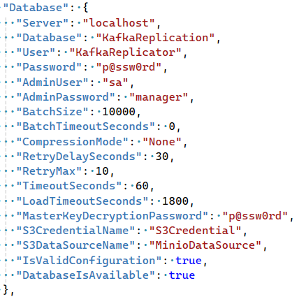
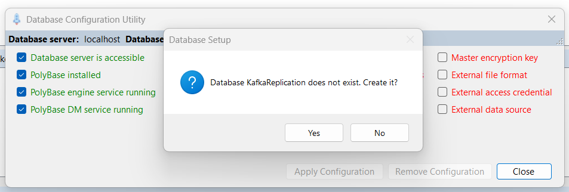
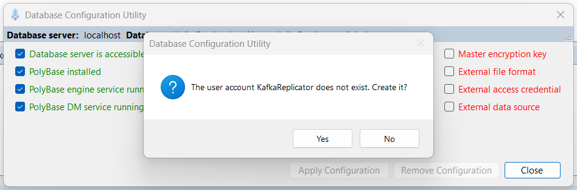
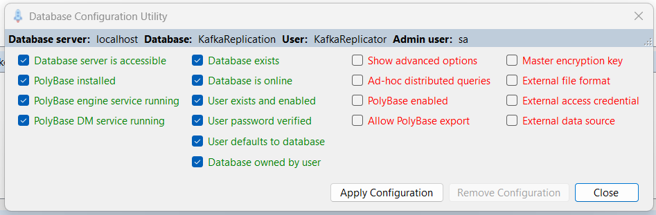
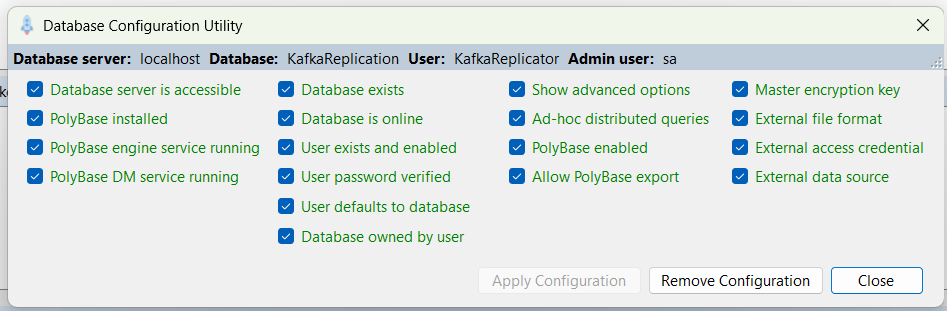

|
Developer Information / Initial Configuration / Database Setup |
Send comments on this topic |
Before you can replicate data to Microsoft SQL Server using the SQL Agent you must configure a SQL Server user account for the agent to use, and create the database that will receive the replicated data.
You can do this in one of two ways:
Database Setup using LaunchPad
One of the functions of the LaunchPad utility allows you to verify the database details and access credentials defined in your current profile, checking that the user accounts exist, have the specified passwords, the database exists, and also that various required database options and settings are correctly configured.
In the development environment we generally work in a profile named DEVELOPMENT. The configuration options for this profile can be found in Solution Items\config\DEVELOPMENT\MasterConfig.json and should look something like this:

Before proceeding, you should check that the AdminUser and AdminPassword properties are correct for your database. If you fail to do this, the Database Configuration Utility will not be able to connect to your SQL Server and you will have to configure the database manually.
IMPORTANT: If instead you chose to alter the profile configuration to match your database, please DO NOT check that change in!
Once you have verified the admin credentials, proceed as follows:
•From the Visual Studio Solution Explorer, start the DevTools\LaunchPad utility.
•From the LaunchPad menu, select Tools > Database Configuration Utility.
Assuming your SQL Server instance is available, and the credentials for the database administrator user are correct in the current profile, and the database associated with the current profile does not exist, you will see a dialog asking whether to create it:

If you see this dialog, click Yes to create the database.
•If the database user account defined in the profile configuration does not exist in the database, you will see a dialog asking whether to create it:

If you see this dialog, click Yes to create the user account.
•Now you should see the main database configuration dialog that shows the state of various database options and settings that are required by the SQL Agent. The first time in it should look like this:

•Click the Apply Configuration button to configure the database for use with the SQL Agent. If all goes well you should see this:

Your database is now correctly configured to work with the SQL Agent.
Manual Database Setup
•Use Visual Studio to open the solution IntegrationPlatform.sln
•Use Server Explorer to connect to your SQL Server.
•Using Server Explorer open and execute the SQL script Solution Items\sql\CreateDatabase.sql which creates a SQL Server user account and database.
Username: KafkaReplicator
Password: p@ssw0rd
Database: KafkaReplication
•Use Server Explorer to open and execute the SQL script Solution Items\sql\ParquetSupportSetup.sql which configures various things in the database to enable support for working with Parquet files.
Copyright © 2025 Synergex International, Inc.